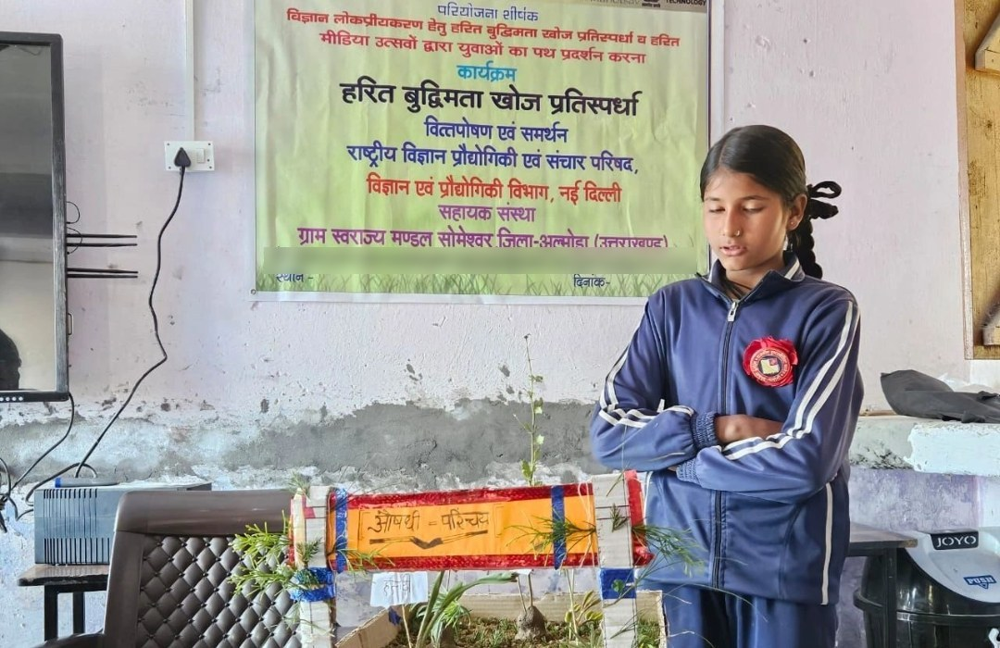

2023 – जारी · Ongoing
हरित बुद्धिमत्ता खोज प्रतिस्पर्धा व हरित मीडिया उत्सव
विज्ञान लोकप्रियकरण हेतु युवाओं का पथ प्रदर्शन। चमोली जिले के थराली व देवाल विकासखंडों के 10 चयनित स्थानों पर छात्रों के लिए प्रतिस्पर्धाएं, और विजेताओं का सम्मान हरित मीडिया उत्सवों में। पहली प्रतिस्पर्धा 23 दिसंबर 2023 को राजकीय इंटर कॉलेज लोल्टी में हुई, जिसमें 50 से अधिक छात्रों ने भाग लिया।
Green Talent Hunt contests and Green Media Festivals to bring science to young people in 10 locations across Tharali and Deval blocks.